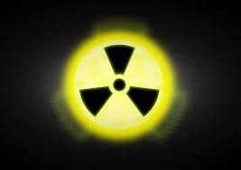

Что же это такое "Вредное достижение цивилизации"?
Вредные достижения – это открытия, которые наносят вред как человеку, так и окружающему миру. В наше время технический прогресс достиг наивысших высот. Однако, мало кто задумывался над тем, что некоторые достижения цивилизации могут быть как полезны, но и вредны.
1. Ядерная энергетика
Что это?
Ядерная энергетика - это отрасль энергетики, связанная с производством электроэнергии с использованием ядерных реакций. Основным источником ядерной энергии являются ядерные реакторы, которые могут работать на делении ядерных материалов (ядерные реакторы на делении) или на синтезе ядерных материалов (термоядерные реакторы). Ядерная энергетика обладает высокой энергетической плотностью и низкими выбросами парниковых газов, но также сопряжена с проблемами безопасности и утилизации радиоактивных отходов.В чем же она опасна?
Риски ядерных аварий: Ядерные аварии могут иметь катастрофические последствия для окружающей среды и здоровья людей. Примером такой аварии является катастрофа на Чернобыльской АЭС в 1986 году, которая привела к выбросу радиоактивных веществ в атмосферу, загрязнению земли и воды, а также к повышенному уровню радиации в окружающих районах. Эти последствия могут оставаться на протяжении длительного времени и оказывать воздействие на здоровье людей и экосистему.
Проблема обращения с радиоактивными отходами: Ядерная энергетика производит радиоактивные отходы, которые остаются опасными на тысячи лет. Безопасное хранение и утилизация этих отходов представляют серьезную проблему, так как необходимо обеспечить их изоляцию от окружающей среды на длительные временные промежутки. Недостаток эффективных методов обращения с радиоактивными отходами может привести к их несанкционированному выбросу и загрязнению окружающей среды.
Возможность распространения ядерного оружия: Технологии, используемые в ядерной энергетике, могут быть использованы для создания ядерного оружия. Это увеличивает риск ядерной пролиферации, так как страны, обладающие ядерными технологиями, могут потенциально использовать их для военных целей. Это создает угрозу мировому порядку и безопасности.
Высокие затраты и длительные сроки строительства: Строительство и обслуживание ядерных станций требует значительных инвестиций и занимает много времени. Это делает ядерную энергетику менее эффективной с точки зрения экономических затрат, особенно в сравнении с альтернативными источниками энергии, такими как возобновляемые источники энергии.
Из-за этих проблем многие люди считают, что ядерная энергетика несет слишком большие риски и негативные последствия для общества и окружающей среды. Поэтому она и считается вредным достижением цивилизации.
2. Автомобили
Что же это такое?
Автомобиль - это самоходное механическое транспортное средство, предназначенное для перевозки людей, грузов или специального оборудования. Он обычно имеет четыре колеса и приводится в движение двигателем, который может быть внутреннего сгорания или электрическим. Автомобили могут быть различных типов, таких как легковые машины, грузовики, автобусы, внедорожники и т.д., и используются для личного, коммерческого или специального применения.Почему же они вредны?
Загрязнение окружающей среды: Автомобили являются одним из основных источников загрязнения воздуха, выбрасывая в атмосферу выхлопные газы, содержащие вредные вещества, такие как углекислый газ, оксиды азота и углеводороды. Это загрязнение способствует возникновению парникового эффекта, кислотных дождей и ухудшению качества воздуха в городах, что в свою очередь приводит к различным заболеваниям дыхательной системы и сердечно-сосудистой системы.
Зависимость от нефтепродуктов: Автомобили в основном работают на бензине или дизельном топливе, что делает их зависимыми от ископаемых видов топлива. Это создает зависимость от нефтедобывающих стран и способствует возникновению энергетических кризисов. Кроме того, добыча и переработка нефти также приводят к загрязнению окружающей среды и разрушению природных экосистем.
Проблемы городской инфраструктуры: Рост количества автомобилей приводит к возникновению проблем с городской инфраструктурой, таких как заторы на дорогах, недостаточное количество парковочных мест и ухудшение качества жизни в городах. Это также способствует увеличению времени, затрачиваемого на поездки, и снижению эффективности использования ресурсов.
Аварии и травмы: Автомобили являются источником повышенной опасности на дорогах, что приводит к большому количеству дорожно-транспортных происшествий, травм и гибели людей. Это также создает дополнительную нагрузку на систему здравоохранения и социальные расходы.
Из-за этих проблем автомобили могут рассматриваться как вредное достижение цивилизации, особенно учитывая возможность использования альтернативных источников энергии и средств передвижения, которые менее вредны для окружающей среды и общества в целом.
3. Пластик
Что это такое?
Пластмассы (пластик) — это искусственные материалы, состоящие из цепочек длинных молекул - полимеров. От сочетания этих цепочек зависят свойства материала. Например, твердые пластики могут заменить металл в производстве автомобилей, а мягкие подходят для изготовления тканей, искусственной кожи и даже меха. Изделия из пластмасс применяются практически во всех отраслях промышленности. Современный мир невозможно представить без изделий из пластика. Однако первые виды пластмассы появились сравнительно недавно - всего полтора века назад. Изобретателем пластмассы является металлург и изобретатель Александр Паркс (англ. Alexander Parkes) из Бирмингема. Он использовал для изготовления своего пластика нитроцеллюлозу (целлюлозу, обработанную азотной кислотой), камфору и спирт. Паркс назвал свое изобретение паркезин. Паркезин впервые появился в Лондоне. Хотя от яркого света целлулоид менял цвет и становился хрупким, из него делали множество вещей — от бильярдных шаров до фотопленки. Пакеты, которые так широко используются в быту для упаковки, делают их полиэтилена. Изобретателем этого материала считается Ганс фон Пехманн: он впервые случайно получил этот продукт в 1899 году. Однако тогда его открытие не получило распространения. Вторая жизнь полиэтилена началась в 1933 году благодаря инженерам Эрику Фосету и Реджинальду Гибсону. Сначала полиэтилен использовался в производстве телефонного кабеля и лишь в 1950-е годы стал использоваться в пищевой промышленности как упаковка.В чем же он опасен?
1. Неразлагаемость: Большинство видов пластика не поддаются биологическому разложению и могут сохраняться в окружающей среде на протяжении сотен лет. Это приводит к накоплению пластиковых отходов, загрязнению почвы, водоемов и океанов.
2. Токсичность: При производстве и разрушении пластика выделяются токсичные вещества, такие как диоксины и BPA, которые могут нанести вред здоровью человека и окружающей среде. Эти вещества могут накапливаться в организмах живых существ, включая человека, вызывая различные заболевания и нарушения в экосистемах.
3. Ущерб морским обитателям: Пластиковые отходы, попадающие в океаны, представляют серьезную опасность для морских обитателей. Многие животные могут переварить или запутаться в пластике, что приводит к их гибели. Кроме того, мелкие частицы пластика (микропластик) могут попадать в пищевые цепи, нанося вред здоровью морских обитателей и, в конечном итоге, человека.
4. Зависимость от нефти: Производство пластика связано с использованием нефти и газа, что приводит к дополнительному спросу на эти ископаемые ресурсы и увеличению выбросов парниковых газов. Это способствует ухудшению климата и разрушению природных экосистем.
5. Энергоемкость: Производство пластика требует большого количества энергии, что приводит к выбросам парниковых газов и загрязнению воздуха. Кроме того, переработка и утилизация пластиковых отходов также требуют значительных энергетических затрат и могут приводить к дополнительному загрязнению окружающей среды.
Именно по этим причинам пластик является вредным достижением цивилизации.
4. Антибиотики и лекарственные препараты
Что это такое?
Антибиотики - это группа лекарственных препаратов, которые используются для лечения бактериальных инфекций. Они действуют путем подавления роста или уничтожения бактерий. Антибиотики были важным достижением в медицине, так как они позволили эффективно бороться с различными инфекциями, которые ранее были опасными или даже смертельными. Лекарственные препараты - это вещества или смеси веществ, которые используются для лечения, профилактики или облегчения симптомов заболеваний. Это широкий класс средств, включающий не только антибиотики, но и другие типы лекарств, такие как анальгетики, противовоспалительные средства, гормоны, витамины и т.д. Лекарственные препараты могут быть синтезированы искусственно или выделены из природных источников.Почему же они - вредное достижение цивилизации?
Антибиотики и лекарственные препараты, несомненно, являются важными достижениями медицины, которые спасают жизни и лечат болезни. Однако, с другой стороны, они также могут рассматриваться как вредные достижения цивилизации по нескольким причинам: 1. Устойчивость к антибиотикам: Неправильное использование антибиотиков приводит к развитию устойчивости у бактерий, что делает многие препараты менее эффективными. Это создает серьезные проблемы в лечении инфекций и может привести к пандемиям устойчивых к антибиотикам бактерий (так называемых "супербактерий"). 2. Побочные эффекты: Многие лекарственные препараты имеют побочные эффекты, которые могут быть опасными для здоровья. Некоторые из этих эффектов могут быть серьезными или даже смертельными, особенно если препараты принимаются не по назначению или в неправильных дозах. 3. Экологические проблемы: Выброс лекарств в окружающую среду (например, через сточные воды) может привести к загрязнению водных источников и нарушению экосистем. Некоторые лекарства, особенно гормоны и психотропные вещества, могут оказывать неблагоприятное воздействие на живые организмы, населяющие водоемы. 4. Экономические проблемы: Дорогостоящие лекарства могут быть недоступны для многих людей, особенно в развивающихся странах. Это создает неравенство в доступе к медицинской помощи и может привести к распространению болезней среди уязвимых групп населения. 5. Зависимость и злоупотребление: Некоторые лекарственные препараты, особенно обезболивающие и психотропные средства, могут вызывать зависимость. Это приводит к проблемам с наркотиками и социальным проблемам, таким как преступность и разрушение семей. В целом, антибиотики и лекарственные препараты являются двойным оружием: они могут быть спасением для многих, но также могут создавать серьезные проблемы, если их использование не контролируется должным образом.